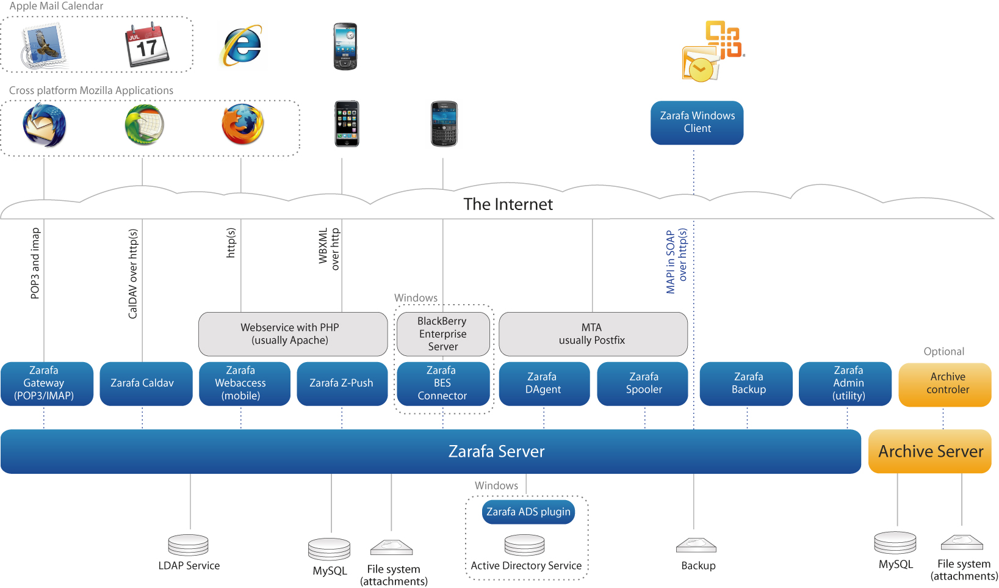
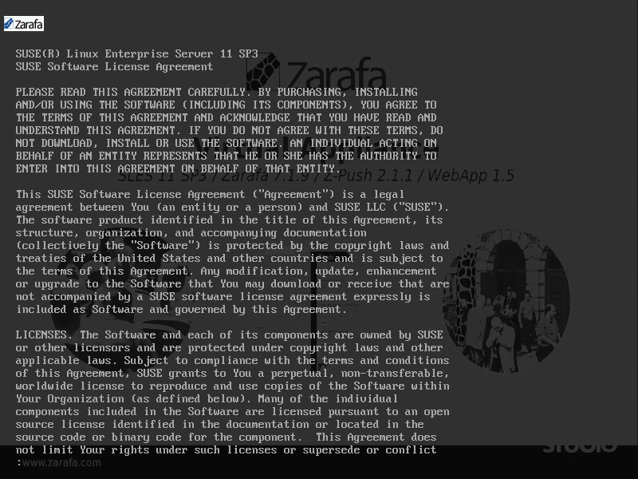
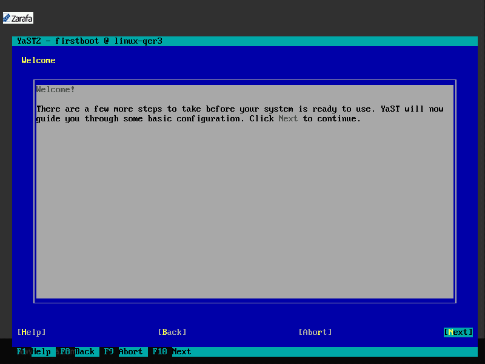
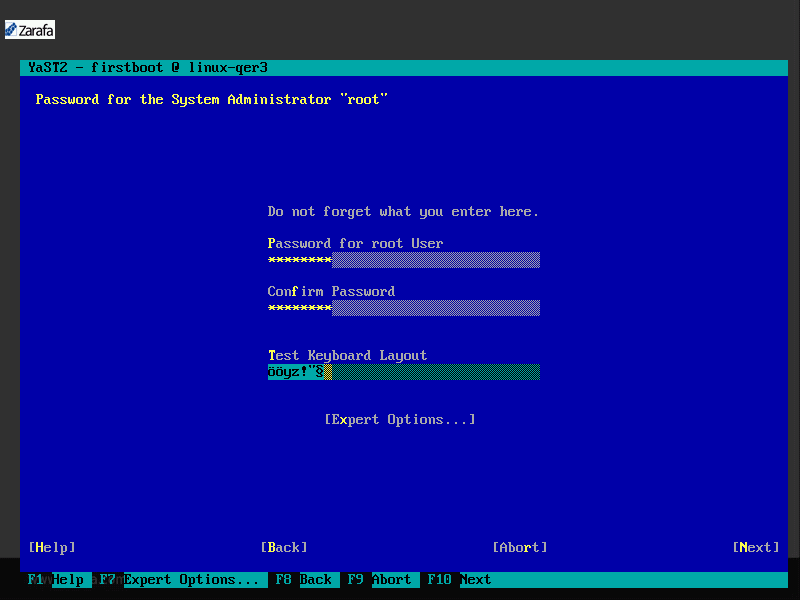
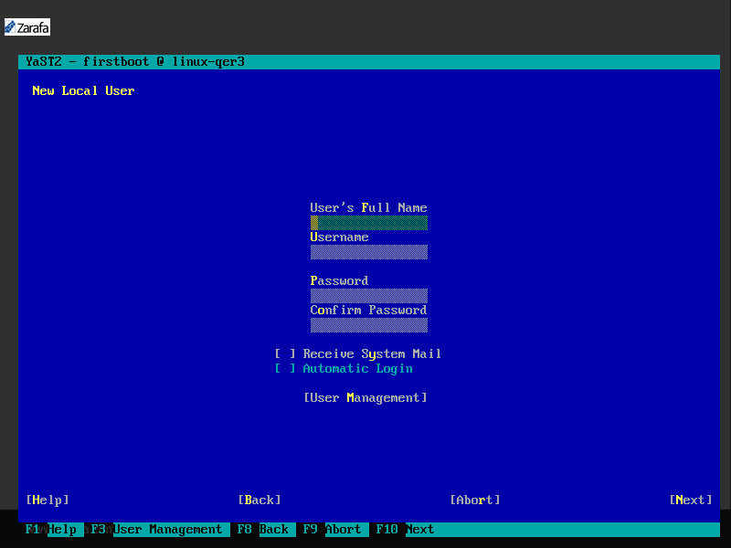
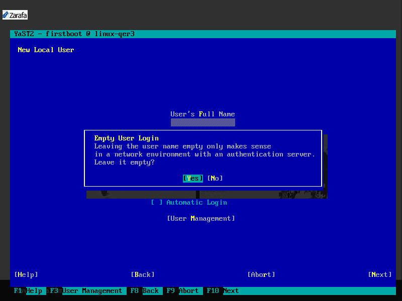
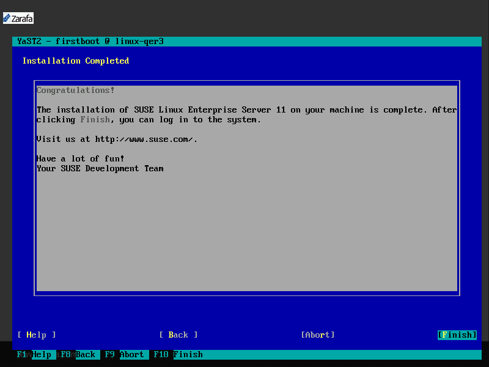
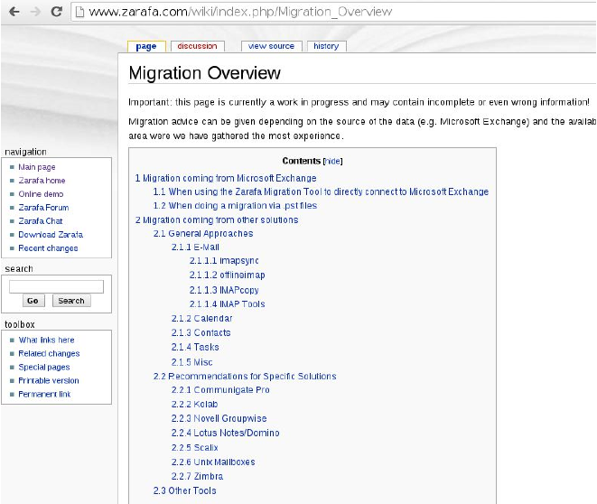

Zarafa Quickstart Manual
Get started with the Zarafa Suse Studio Appliance!
How to use this manual?
- Navigation is done with the arrow keys your keyboard:
- Left and right to go through the topics,
- down for more detailed information.
- But if you like you can also use the navigation in the bottom right corner or your touch screen
- or simply go through all slides with the space bar.
- You can press the ESC key to get an overview of all slides
- If you like you can also print this presentation (works best with Chrome)
You are about to learn ...
- ... what Zarafa is in general
- ... the technical background of every Zarafa installation
- ... how to get started with the VM
- ... how to integrate the VM into your environment
- ... how to manage users and groups
- ... how to connect the individual clients
- ... how to migrate your data
- ... how to backup your system
Agenda
Who is Zarafa?
- Zarafa B.V. [Delft/Netherlands]
- founded 1999
- international Headquarter
- Home of our developers, QA, international sales and support
- Zarafa Deutschland GmbH [Hanover/Germany]
- founded 2006
- Sales and support for Germany, Austria and Switzerland
What is Zarafa?
Open
- Open Source - AGPL since 2006
- Open Design - Open Architecture
- Open Choice - In-house, cloud based or both combined
Compatible
- Complete MAPI implementation
- Best integration of Microsoft Outlook (2003 - 2013)
- Z-Push (implements Exchange ActiveSync) for Mobile Devices
- Full featured HTML5 WebApp
Enterprise
- Subscription including maintenance and support
- Scales from 5 to 50.000 users (and beyond)
- Enterprise level High Availability
- can be completely virtualized
Technischer Hintergrund von Zarafa
In diesem Kapitel lernen Sie den vollständigen technischen Hintergrund von Zarafa kennen.
Gehen Sie dazu bitte "nach unten" um die einzelnen Folien anzusehen
Technischer Hintergrund (1)
- Zarafa ist ein auf Linux basierender Groupwareserver
- Zarafa verwendet als Datenmodell MAPI - wie MS-Exchange
- Daten werden in einer MySQL Datenbank gespeichert und E-Mail Attachments im Filesystem
- Anbindung an Outlook mit zarafaclient.msi Paket welches MAPI-Treiber in Outlook für native Anbindung an Zarafa bereitstellt
- Outlook kann Online und Offline genutzt werden
Technischer Hintergrund (2)
- Zarafa WebApp ist ein Webclient mit ExtJS und HTML 5 Technologie und wird auf einem Apache Webserver mit PHP installiert
- Genutzt wird die Zarafa PHPMAPI Bibliothek für eine native Anbindung an den Server
- WebApp besitzt eine Pluginschnittstelle für die Erweiterung von Features oder die Integration von 3rd Party Software
- Z-Push ist die OpenSource Implementierung des Microsoft ActiveSync Protokoll
- Ist in PHP entwickelt, kann auf Webserver mit PHP installiert werden und bietet identische Features wie ein Exchangeserver
Technischer Hintergrund (3)
- E-Mailclients können per Zarafa Gateway über die Standardprotokolle IMAP und POP3 angebunden werden
- Kalenderclients nutzen das Zarafa Gateway über das Standardprotokoll CalDAV um iCal Dateien auszutauschen
- Aufgabe der Gateways ist die Übersetzung der MAPI Informationen in die entsprechenden Standards und bereitstellung der Standardprotokolle
- Zukünftig (ab Zarafa 7.2.0) steht das XML basierte Protokoll "Zarafa Webservices" (ZWS) als Ersatz für das Exchange Webserviceprotokoll (EWS) für die native Anbindung von z.B. MacOS Clients (auch Outlook für MacOS) zur Verfügung.
Technischer Hintergrund (4)
- Zarafa bringt keinen eigenen E-Mailserver mit. Nahezu jeder E-Mailserver (MTA) (z.B. Postfix, Sendmail...) kann wie zuvor konfiguriert weitergenutzt werden
- MTA übergibt nach evtl. konfigurierten Filtern für Viren/SPAM die eingehende E-Mail an den Zarafa dAgent, der die E-Mail in ein MAPI Objekt konvertiert und ins korrekte Postfach ablegt.
- Der Versand von E-Mails wird durch den Zarafa Spooler erledigt. Er konvertiert die in den Clients abgesendeten E-Mails zu einer Standard SMTP Mail und übergibt diese an den MTA
- Für interne E-Mails ist dadurch ebenfalls ein Virenschutz gewährleistet.
Technischer Hintergrund (5)
- Benutzerverwaltung kann in der MySQL Datenbank genutzt werden.
- Empfohlen ist die Verwendung eines Verzeichnisdienstes wie OpenLDAP, ActiveDirectory, eDirectory oder jeder andere LDAP basierende Verzeichnisdienst.
- Durch eine Schemaerweiterung werden die von Zarafa benötigten Informationen nutzbar gemacht.
- Zarafa greift nur lesend auf das Verzeichnis zu.
- Anbindung an LDAP wird durch Mapping-Datei individualisiert, d.h. bestehende Verzeichnisse können größtenteils ohne Änderung weitergenutzt werden
Technischer Hintergrund (6)
- Weitere Zarafa Komponenten sind:
- Zarafa-Monitor: Überwachung und Warnung von Quota Grenzen
- Zarafa-Admin: Administrationstool für Benutzer- und Gruppenverwaltung
- Zarafa-Licensed: Lizenzdämon für die Überwachung von Zarafa Subskriptionen
- Zarafa-Backup: Bricklevel Backup ermöglicht wiederherstellung einzelner Elemente
- Zarafa-Search: Indexierung der Daten (inkl. E-Mail Attachments
Zarafa Archiver
Beim Zarafa Archiver handelt es sich um zusätzliches Produkt was bei Professional oder Enterprise Subskriptionen zusätzlich genutzt werden kann, und bereits für 20 Benutzer enthalten ist.
Ziel des Archiver ist Lastverteilung für ältere E-Mails (Zeitraum kann frei definiert werden). Diese werden auf den Archivserver durch Zarafa automatisch ausgelagt. So bleibt die Produktivdatenbank von der Größe her planbar. Der Archivserver kann mit deutlich günstigerer Hardware ausgestattet sein, da es bei alten E-Mails eher nicht auf Performance ankommt.
Technischer Hintergrund (7)
Abhängigkeiten (1)
- MySQL - Server
- kann sich auf Zarafa Server oder anderem Server befinden
- Wenn separater Datenbankserver ist auf dem Zarafa System die MySQL Client Bibliothek erforderlich
- Ab Zarafa 7.1.10 auch MariaDB offiziell unterstützt
- E-Mailserver (MTA)
- Nahezu jeder MTA nutzbar
- Empfohlen und getestet sind Postfix, Sendmail, Exim und QMail
- Apache Webserver + PHP
- libicu - wird für UTF-8 Unterstützung benötigt
- Englische Sprachpakete
Abhängigkeiten (2)
Wenn Zarafa normal installiert wird, sind in den Downloadpaketen folgende Pakete enthalten:
- libvmime + libvmime-devel
- libical + libical-devel
Bitte achten Sie darauf, daß ausnahmslos die mitgelieferten Pakete installiert werden.
Wenn der Server automatisch Updates einspielt müssen diese Pakete davon ausgenommen werden.
Inbetriebnahme der VM
Die VM basiert auf dem SuSE Linux Enterprise Server 11 R3 und enthält die aktuellste Zarafa Version als Exchange Ersatz und Z-Push für die Anbindung von mobilen Geräten über das Active Sync Protokoll.
Weiterhin ist ein OpenLDAP Server mit Beispielbenutzern, ein E-Mailserver der für lokalen E-Mailversand vorkonfiguriert ist und die entsprechende Datenbank enthalten.
In den folgenden Schritten erfahren Sie, wie Sie die VM in Betrieb nehmen und dann wie sie für einen produktiven Test in Ihre Umgebung integriert werden kann.
Virtuelle Maschine importieren
Sie können die VM nach dem entpacken wie folgt beschrieben in eine Virtualisierungslösung importieren.
^Oracle Virtualbox - Über Datei - Appliance importieren die .ovf Datei importieren.
VMware Player - Über Datei - Virtuelle Maschine öffnen die .ovf Datei importieren.
sonstige Lösungen - Erstellen Sie eine neue VM (SUSE 64bit) und importieren Sie die enthaltene .vmdk als virtuelle Festplatte.
Konfiguration der VM
Standardmäßig wird die VM mit folgenden Werten importiert, die für Testzwecke in den meisten Fällen ausreichend sind.
Gerade der Arbeitsspeicher kann je nach Benutzerzahl und Datenmenge erhöht werden. Evtl. ist auch für den Zugriff aus dem lokalen Netzwerk / dem Internet eine 2. Netzwerkkarte hinzuzufügen.
- Arbeitsspeicher: 2 GB
- 1 CPU-Kern
- 1 Netzwerkinterface / DHCP als Bridge konfiguriert
Nach Import und evtl. Hardwareanpassungen kann die VM gestartet werden.
Individualisierung (1)
Die VM ist für den Betrieb bereits vorkonfiguriert. Einige Parameter wie z.B. Tastaturlayout, ROOT-Passwort usw. müssen aber beim ersten Start noch Individuell eingestellt werden.
Als erstes erscheint die Lizenz die Sie akzeptieren müssen. Sollten Sie diese Lizenz bereits kennen, können Sie mit der Taste q ans Ende springen.
Individualisierung (2)

Zuerst können Sie die Spracheinstellungen für das System und die Tastatur festlegen.
Individualisierung (3)
Hinweis zur bevorstehenden Basiskonfiguration
Individualisierung (4)

Ihre Zeitzone und die aktuelle Uhrzeit/Datum. Achten Sie auf die korrekte Datum/Uhrzeiteinstellung.
Individualisierung (5)
Hier bitte ein Passwort für den Systemadministrator ROOT vergeben. Auch können Sie hier die Tastureinstellung überprüfen
Individualisierung (6)

Die abgefragte Authentifizierungsmethode bezieht sich auf die lokalen Systembenutzer und hat nichts mit Zarafabenutzern zu tun. Wählen Sie hier local aus.
Individualisierung (7)
Hier könnten Sie einen lokalen Systembenutzer anlegen. Dies ist für den Testbetrieb mit Zarafa nicht notwendig.
Individualisierung (8)
Warnhinweis wenn kein lokaler Benutzer angelegt wurde.
Individualisierung (9)
Abschluß der Vorkonfiguration.
Erster Start

Nun wird das System das erste mal gestartet und automatisch fertig Vorkonfiguriert. Achten Sie darauf ob hier Fehler beim Start angezeigt werden.
Integration in bestehende Umgebung
Die VM hat einen für die lokale Nutzung vorkonfigurierten E-Mailserver. Auch sind im enthaltenen OpenLDAP Verzeichnis 2 Demobenutzer enthalten./p>
Folgende Themenblöcke werden anschließend behandelt.
- E-Mailserver anpassen
- Lizenzkey einspielen
- Sprachkonfiguration
- Indexierung (Zarafa-Search)
- Tuning MySQL Datenbank + Zarafa
- Updates einspielen
E-Mailserver anpassen
Domäne hinzufügen
- Die VM ist für die lokale Testdomäne @zarafa.local bereits vorkonfiguriert.
- Um eine oder mehrere Domänen hinzuzufügen öffnen Sie die Datei /etc/postfix/main.cf.
- Am Ende finden Sie die Variable virtual_mailbox_domains, fügen Sie Ihre Domains mit Komma getrennt der Eintragung hinzu.
- Beispiel:
virtual_mailbox_domains = zarafa.local, firma.de - Abschließend muß der Postfix E-Mailserver mit folgendem Befehl neugestartet werden: service postfix restart
Mails von Mailserver abholen
- Um E-Mails von einem fremden Server abzoholen, kann Fetchmail genutzt werden.
- Werden E-Mails direkt an die VM zugestellt, muß keine weitere Konfiguration erfolgen.
- Fetchmail ist auf Abholung alle 60 Sekunden vorkonfiguriert
- Konfiguration der einzelnen abzuholenden Konten in der Datei /etc/fetchmailrc (Beispiel nächste Folie)
- Mit dem Befehl chkconfig fetchmail on wird der Fetchmaildienst bei Systemstart automatisch gestartet
- Nach Konfiguration mit Befehl service fetchmail start erstmalig starten.
/etc/fetchmailrc
- defaults
- proto pop3 Protokoll zum abholen
- nokeep löscht Mails auf Server/ keep behält sie
- # ab hier Benutzerkonfigurationen
- poll demo1@web.de Abzuholende Mailadresse
- via pop3.web.de Serveradresse
- user "demo1" Loginname
- pass "password" Passwort
- mda "/usr/bin/zarafa-dagent demo1" hier Zarafa Login angeben
- flush
- no ssl keine SSL Verbindung
Nach diesem Muster können beliebig viele Benutzer erfasst werden.
Mailzustellung
- Um E-Mails nicht direkt zuzustellen muß der eigentlich zuständige E-Mailserver konfiguriert werden.
- Konfiguration in der Datei /etc/postfix/main.cf
- Beispielkonfiguration:
relayhost = [ipadresse]
smtp_sasl_auth_enable = yes
smtp_sasl_password_maps = hash:/etc/postfix/smtp_auth
smtp_sasl_security_options = noanonymous - Dann die Datei /etc/postfix/smtp_auth erstellen:
[ipadresse] [Benutzer]:[Passwort] - anschließend mit postmap /etc/postfix/smtp_auth die Hash Datei erstellen
- Zum Abschluß nun Postfix neustarten mit service postfix restart
Lizenzkey einspielen
Editionen
- Open Source Edition
Unlimitierter Zugriff per WebApp, IMAP, POP3 und Z-Push möglich
Lizenzdienst (zarafa-licensed) läuft nicht - Free Edition
zustätzlich zu unlimitiertem Zugriff wie bei OpenSource Edition 3 Outlook Zugriffe möglich
laufender Lizenzdienst ohne oder mit falschem Lizenzkey - Supporteter Modus
Zugriff auf alle Open Source und kommerziellen Features
laufender Lizenzdienst mit gültigem Lizenzkey
pro Benutzer eine Subskription notwendig - keine Unterscheidung nach Clientzugriff
Lizenzkey einspielen
- Erste Subskription eines Kunden ist die Basis Subskription
diese wird in die Datei /etc/zarafa/license/base geschrieben - Weitere Benutzersubskriptionen erweitern als zusätzlicher Cal die Basis
diese werden in Dateien /etc/zarafa/license/cal1 geschrieben.
Die Zahl 1 ist für die erste Erweiterung und muß für jede Erweiterung erhöht werden. - Beispielkey: Zarafa 7.1 - 25 Benutzer - gültig 30 Tage
Z0ZX0068ZX07Z86FFTKJ5B09K
Sprachkonfiguration
Spracheinstellung
- Die VM ist für die Deutsche Sprache vorkonfiguriert.
- Die Konfiguration für die Sprache von Zarafa findet in der Datei /etc/sysconfig/zarafa statt.
- Die Sprache für die Zarafa Dienste und die öffentlichen Ordner wird in der Variable ZARAFA_LOCALE festgelegt.
- Die Sprache für die Ordner in den Postfächern wird in der Variable ZARAFA_USERSCRIPT_LOCALE festgelegt.
- Die Einstellungen greifen nur für nach der Konfiguration angelegte Ordner.
Indexierung
Zarafa Search
- Standardmäßig ist die Indexierung eingeschaltet. Dies kann in der /etc/zarafa/server.cfg über die Variable search_enabled ein- oder ausgeschaltet werden. Zusätzlich muß der Dienst zarafa-search laufen.
- Die Konfiguration der Indexierung findet in der Datei /etc/zarafa/search.cfg statt.
- Es ist möglich auch E-Mail Attachments zu indexieren. Dazu muß die Variable index_attachments eingeschaltet werden.
- Über die Variable index_attachment_max_size kann man die maximale Größe an zu indexierendem Dateianhang einstellen.
Tuning MySQL Datenbank und Zarafa Server
MySQL Datenbank (1)
- Die virtuelle Maschine wird standardmäßig mit 2 GB RAM importiert. Für diese RAM Größe ist die MySQL Datenbank bereits optimiert.
- Zarafa verwendet die Datenbankengine InnoDB. Der InnoDB Cache ist in jeder Zarafa Installation auf die Hardware anzupassen.
- Die Größe des Cache sollte 50% (mind. 25%) des zur Verfügung stehenden Arbeitsspeicher betragen.
- InnoDB nutzt neben der Datendatei auch noch ein zugehöriges Logfile, welches 50% der Cachegröße haben sollte, maximal 4GB.
MySQL Datenbank (2)
- Die Konfiguration findet in der Datei /etc/my.cnf statt.
- Folgende Variablen sind anzupasen:
innodb_buffer_pool_size = 1024M 1GB Cache Größe
innodb_log_file_size = 512M 512MB LogFile Größe - Wenn die Log_file_size angepasst wird sind vor dem Neustart des MySQL Server die Logdateien (var/lib/mysql/iblog* zu sichern. Sollte die Datenbank dann nicht starten, die Logdateien zurückspielen, Wert zurücksetzen und andere Konfiguration verwenden.
- Lesen Sie für weitere Tuningmöglichkeiten die MySQL Dokumentation.
Zarafa Cache
- Der Zarafa Cache speichert Ansichten (wie z.B. Liste eines E-Mailordners oder Termine eines angezeigten Zeitraumes) in Tabellenform und unterstützend zum Datenbankcache für schnelle Antwortzeiten auch bei großen Umgebungen zu gewährleisten.
- Die Konfiguration findet in der Datei /etc/zarafa/server.cfg statt.
- Folgende 3 Variablen sind für jede Installation anzupassen:
cache_cell_size = 512M Cache Größe sollte 25% des RAM sein
cache_object_size = [100k/Benutzer] enthält Ordnerhierarchie
cache_indexed_object_size = [512k/Benuzer] enthält alle ID´s
Updates für Zarafa
Major-/Minor Updates
- Die Versionsnummer 7.1.10 hat folgenden Aufbau
7.1 => major release number
10 => minor release number - Major Releases (7.0.x, 7.1.x, 7.2.x) enthalten neben Bugfixes auch eine reihe neuer Features und Technologien.
- Minor Releases (7.1.9, 7.1.10, 7.1.11) enthalten hauptsächlich Bugfixes und Sicherheitsupdates.
- Für ein Major Update ist eine gültige Subskription notwendig. Jedes Majorrelease hat einen eigenen Lizenzkey. Bei einem Majorupdate ist zusätzlich zur Software auch der Lizenzkey aktualisiert werden.
- Minor Releases können jederzeit eingespielt werden. Außer dem Softwareupdate ist keine weitere Änderung notwendig.
Updates einspielen
- Alle Zarafa Dienste stoppen, z.B. mit folgendem Befehl:
for PROC in /etc/init.d/zarafa-* ; do $PROC stop ; done - Pakete einspielen, folgender Befehl im Downloadverzeichnis:
rpm -Fhv *.rpm - Anschlieend alle Zarafa Dienste wieder starten:
for PROC in /etc/init.d/zarafa-* ; do $PROC start ; done - Neuer Lizenzkey bei Majorupdate nicht vergessen und folgende Dienste neustarten:
service zarafa-licensed restart
service zarafa-server restart/li>
Benutzerverwaltung im OpenLDAP oder AD
Anbindung von Clients an Zarafa
Datenmigration
Es gibt verschiedene Methoden um Daten von anderen Groupwareservern oder reinen E-Mailservern zu migrieren.
In den folgenden Folien ist die Migration von Exchange Servern / PST Dateien näher beschrieben.
Um von einer anderen Lösung (Groupware oder nur E-Mailserver) eine Datenmigration durchzuführen, gibt es in folgendem Wiki weitere Hinweise
http://www.zarafa.com/wiki/index.php/Migration_Overview Migrationstool
Zarafa liefert ein Migrationsskript mit. Dieses Tool dient zur automatisierten Migration von
- Exchange Server [vollständig oder nur einzelne Benutzer]
- PST Datei(en)
- Scalix Server
Das Migrationstool ist in der VM enthalten und kann vom Windowsdesktop per Webbrowser heruntergeladen und installiert werden
URL: http://[ipadresseVM]/tools/zarafamigrationstool.msiExchangemigration (1)
- Um mit dem Migrationstool zu migrieren, benötigen Sie folgende Informationen:
- Administrator Benutzerinformationen Exchange Server
- Benutzerinformationen Zarafa System eines Benutzers mit Administratorberechtigungen
- Mappingdatei
Auf der folgenden Folie sehen Sie wie auf dem Exchange Server die Mappingdatei vorbereitet werden kann.
Wenn Sie von PST Dateien migrieren muß die Mappingdatei folgendermaßen vorbereitet werden:
pstdatei,zarafalogin
demo1.pst,demo1
demo2.pst,demo2
Exchangemigration (2)
- Auf der Windows Kommandozeile (cmd) kann mit folgendem Befehl die notwendige Information aus dem AD in eine .csv Datei geschrieben werden
- csvde -f C:\User\DemoAdmin\Desktop\zarafa-migrator.csv -d "DC=demofirma,DC=local" -r objectCategory=user -l "legacyExchangeDN,sAMAccountname"
- Es muß der Pfad hinter -f und der Domänenname hinter -d angepasst werden
- Die .csv Datei enthält alle Benutzer aus dem AD in der Reihenfolge DN,Loginname,legacyExchangeDN
- Wichtig für die Mappingdatei ist der legacyExchangeDN, die wie folgt aussehen sollte: exchange,zarafalogin
/o=TESTER/ou=firstadministrativegroup/cn=Recipients/cn=demo1,demo1
Exchangemigration (3)
Backup
- Für ein vollständiges und schnelles Desaster Recovery sind folgende Backups einzurichten:
- MySQL Datenbank
- Attachment Verzeichnis
- Konfigurationsverzeichnis /etc/zarafa/
- Konfigurationsverzeichnis /etc/postfix/
- OpenLDAP bei Nutzung
- Unabdingbar ist auf jeden Fall eine Sicherung der Datenbank und der Attachments
Zarafa Daten sichern
- Die Datenbank wird idealerweise mit einem Dump gesichert.
- der Befehl mysqldump muß zwingend mit der Option --single-transaction ausgeführt werden.
- Es können auch folgende Methoden zur Sicherung genutzt werden:
- Filesystemsnapshot
- Datenbankreplikation
- Ordner /var/lib/mysql vollständig wegsichern
- Zusätzlich ist z.B. mit rsync, einem kommerziellen Backuptool oder anderer Konfiguration das Attachment Verzeichnis wegzusichern
Bricklevel Backup
- Zarafa Subskriptionen ermöglichen den Zugriff auf Zarafa Backup. Es handelt sich hierbei um ein Bricklevel Backuptool welches es dem Administrator ermöglicht einzelne entgültig gelöschte Elemente wieder herzustellen.
- Es stehen 2 Kommandos zur Verfügung:
- zarafa-backup
- zarafa-restore
- Beim Backup (zarafa-backup -a sichert alle Nutzer + Öffentliche Ordner) wird pro Benutzer eine Datendatei und eine Indexdatei angelegt
- Mit einem Hilfsskript readable-index.pl (im Ordner /usr/share/zarafa-backup/) haben Sie eine leichtere Möglichkeit die Indexdatei auszuwerten.
Weitere Hilfe
Danke das Sie dieses Quickstart Training durchgearbeitet haben. Wir hoffen Sie konnten auf alle Fragen eine Antwort finden. Sollten noch weitere Fragen offen sein, haben Sie folgende Möglichkeiten:- Administrator Handbuch
- Zarafa Forum
- enthaltener Support in einer gültigen Subskription
- wenn Sie keine Subskription haben, wenden Sie sich gerne an sales@zarafaserver.de
Sollten Sie Feedback zum Training haben, senden Sie bitte eine E-Mail an info@zarafaserver.de
Need more help?
Additional help can be gathered from the Zarafa Community Forums.
Customers with a valid subscription can open a support case at our portal or acquire professional services from the Zarafa sales team.
Playground/Examples
nothing to see here ;-)
apt-get update
command